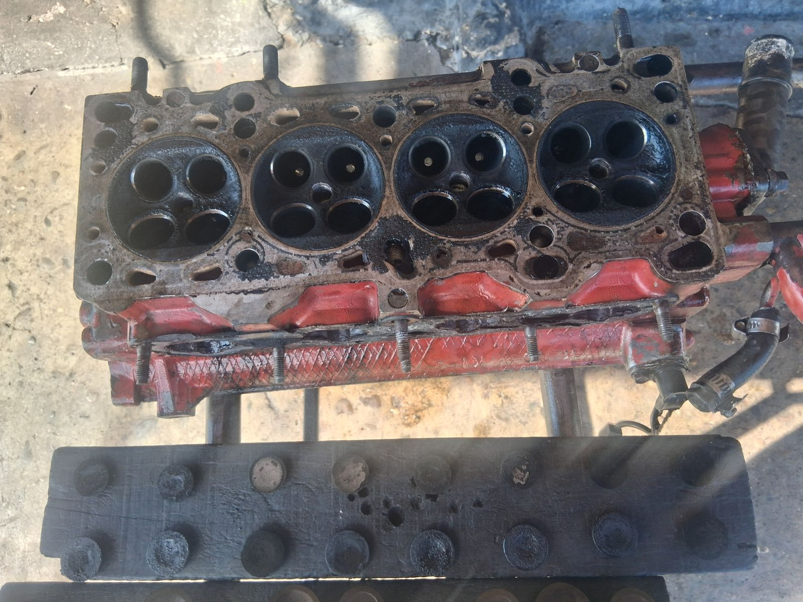
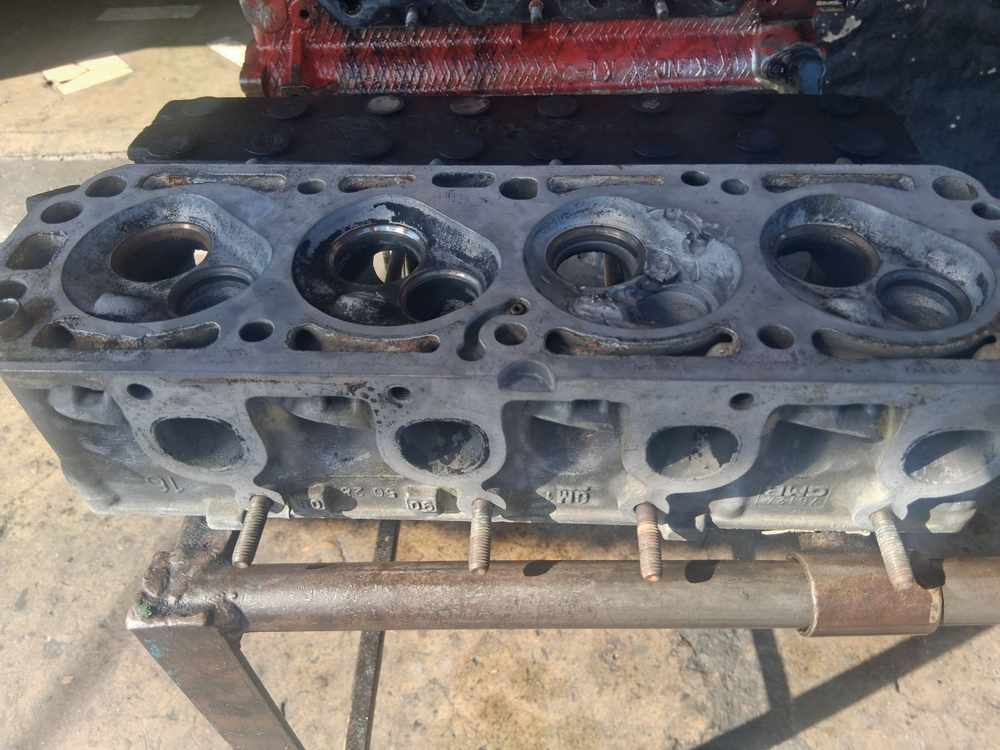
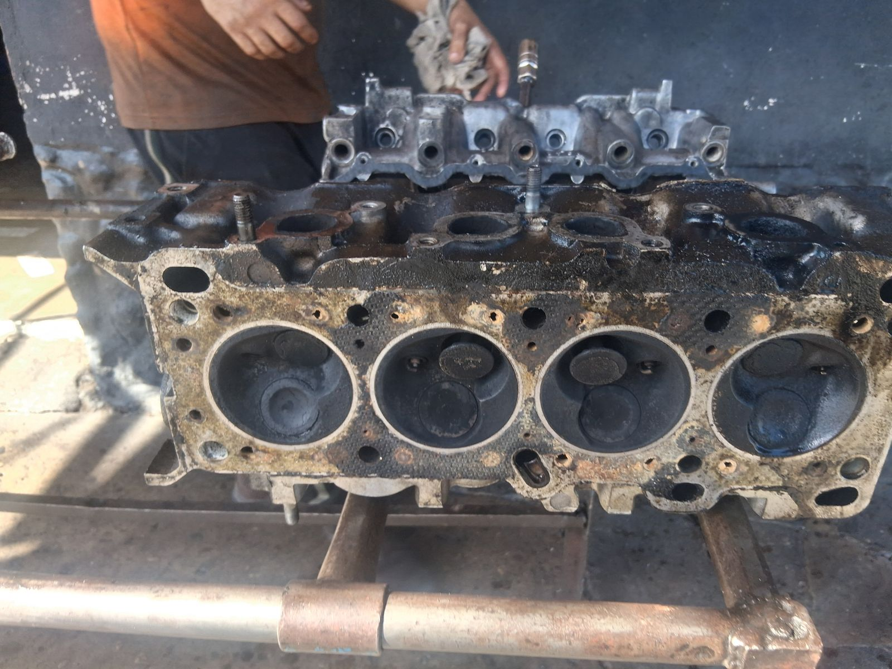
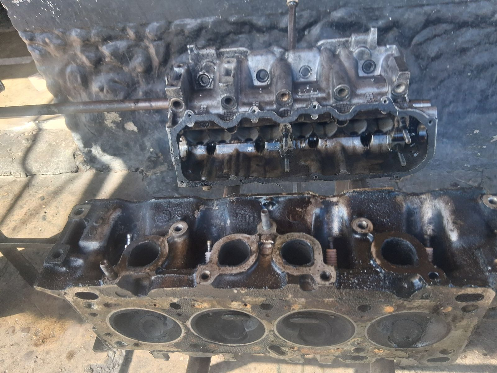
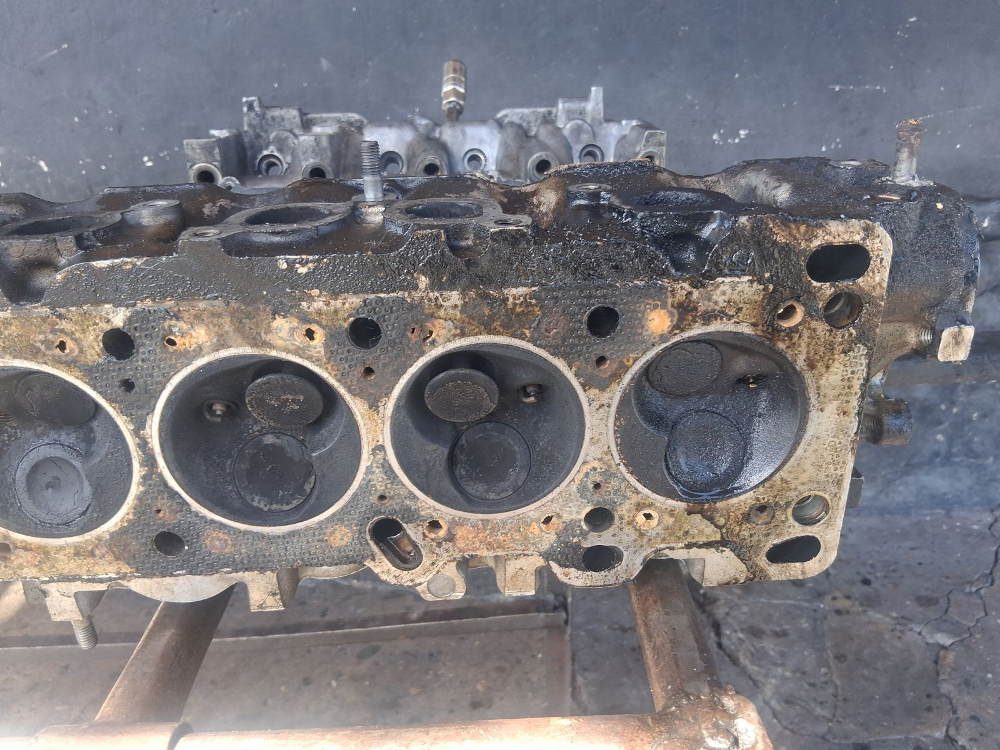
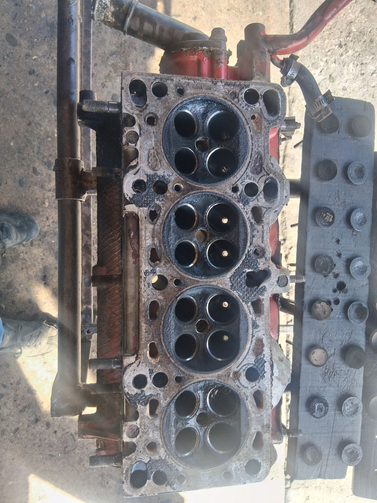
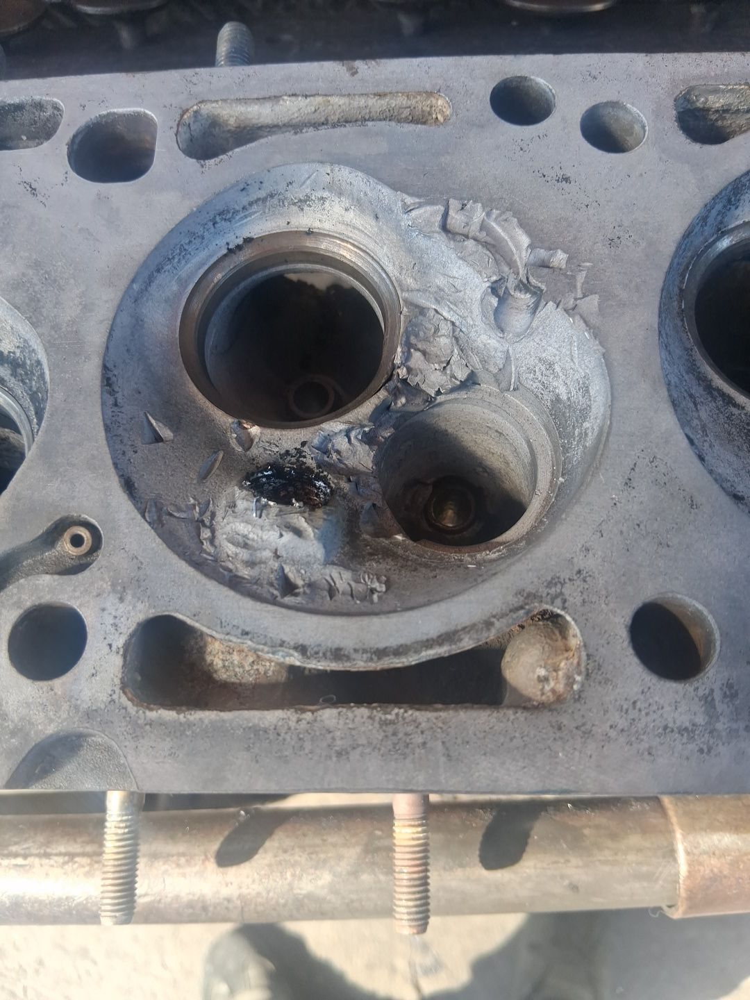
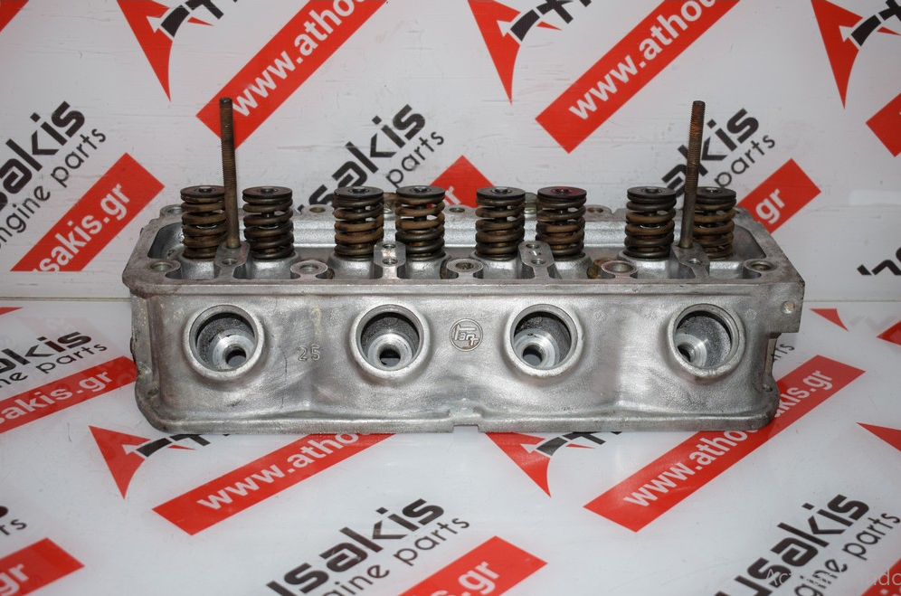

Cámaras (culatas) de motor reparadas, rectificadas y probadas en Regasa para clientes de todas las parroquias del Municipio Barinas.
Cámaras (culatas) diésel y gasolina que llegaron recientemente a nuestro taller para diagnóstico y reparación.



















Cuéntanos qué síntomas tiene tu vehículo y te respondemos por WhatsApp con la orientación y el presupuesto para reparar la cámara o culata.